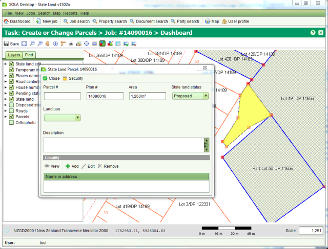

The Add New State Land Parcel tool  can be used to create a new parcel in the map. Use
left click of your mouse to trace the boundary points (a.k.a. nodes) for the new the new
parcel. Double click the last boundary point to complete the capture. This will display the
Parcel Details screen with default values for the plan number and area. Correct these values
if necessary and enter the parcel number along with any other relevant information before you
can be used to create a new parcel in the map. Use
left click of your mouse to trace the boundary points (a.k.a. nodes) for the new the new
parcel. Double click the last boundary point to complete the capture. This will display the
Parcel Details screen with default values for the plan number and area. Correct these values
if necessary and enter the parcel number along with any other relevant information before you
 Close
the Parcel Details screen.
Close
the Parcel Details screen.
If you click the wrong location for one of the parcel nodes, continue to capture the parcel
and use the Edit State Land Parcel tool  to fix the node later.
to fix the node later.
If you need to completely remove the new parcel from the job, use  Remove on the State Land Parcel
List screen.
Remove on the State Land Parcel
List screen.

Adding a new state land parcel